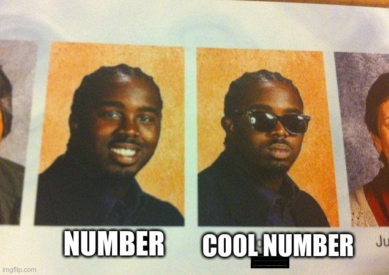

In what concerns the continuous evaluation solving exercises grade during the semester, you should submit until 23:59 of October 18th
(this exercise will still be available for submission after that deadline, but without couting towards your grade)
[to understand the context of this problem, you should read the class #02 exercise sheet]

Pedro noticed that the number 95726184 was written underneath his laptop. Curious as he was, he couldn't help noticing that the sum of its digits was 42! In fact, 9+5+7+2+6+1+8+4=42, which made Pedro think that this was a really "cool" number.Overjoyed, he ran to Ana to tell him about his discovery. However, Ana didn't find the discovery that fascinating, as she thought that there were many numbers with this property. Pedro started counting from 95726184 and in fact 9 numbers later came 95726193, the sum of whose digits was also 42. But the distance isn't always so short...
After some more thought, Pedro thought he could create a game to challenge Ana, which consists of finding the first "cool" number greater than a given number. To prevent someone from simply trying to memorise answers, he decided he was interested in numbers whose sum of the digits was any given number of their choice and not just 42.
Given several pairs of integers Ni and Ki, your task is to find, for each pair, the smallest number greater than Ni such that the sum of its digits is exactly Ki.
The first line of the input contains an integer T indicating the number of test cases, i.e. the number of pairs of integers to consider.
This is followed by T lines, each with the two corresponding Ni Ki integers.
The output must contain T lines. The i-th line should contain a single integer Ai indicating the answer for the corresponding pair, i.e. which is the smallest number that is both greater than Ni and with the sum of its digits being Ki.
The following limits are guaranteed in all the test cases that will be given to your program:
| 1 ≤ T ≤ 1 000 | Number of test cases | |
| 1 ≤ Ni ≤ 1016 | Initial Numbers | |
| 1 ≤ Ki ≤ 100 | Desired digit sum | |
| 1 ≤ Ai - Ni ≤ 1018 | Difference between initial number and the number we are looking for |
| Example Input 1 | Example Output 1 |
6 95726184 42 424242 42 1 25 299 13 8660 20 4253816 8 |
95726193 429999 799 319 8705 4300001 |
| Example Input 2 | Example Output 2 |
7 100000599988 50 100000599989 50 100000599998 50 987654321098 100 12121678909876 42 12121128909876 42 1 92 |
100000599989 100000599998 100000679999 987679999999 12121678910004 12121128910059 29999999999 |